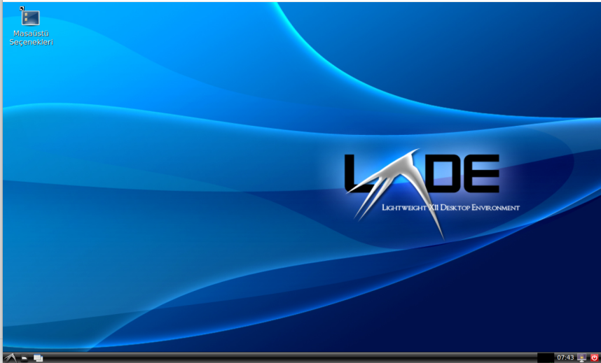

LXDE'yi xinit veya startx'le Çalıştırma¶
xinit ve startx X Pencere Sistemi'ni başlatmak için kullanılan komutlardır. xinit ve startx, X sunucusunu kullanıcı girişinden sonra manuel olarak başlatmak için kullanılır.
xinit X sunucusunu başlatır ve ardından belirtilen tek bir uygulamayı çalıştırır. startx xinit için bir kabuk (wrapper) komutudur. ~/.xinitrc betiğini çalıştırır, yoksa sistem varsayılanını kullanır.
Eğer belirli bir pencere yöneticisi veya masaüstü ortamı ile başlatmak istiyorsanız, ~/.xinitrc dosyasını düzenlemeniz gerekebilir. Dosyanın içeriği şöyle olmalıdır:
openbox Masaüstü Ortamını Kullanma¶
exec openbox-session
lxde Masaüstü Ortamını Kullanma¶
exec lxsession
#startx
# veya
xinit
Lightdm¶
xinit veya startx ile masaüstü ortamının açılışını sağlanacağını bu bölümde gördük. Fakat bu şekilde bir açılış süreci yorucu ve mevcut dağıtımların açılışından farklı olacaktır. Bu durum son kullanıcı için çok çekici veya kullanıcı dostu gelmeyebilir. Bundan dolayı lightdm kullanabilirsiniz. LightDM bir Display Manager (giriş yöneticisi)’dir.
Görevi nedir?:
- Grafik arayüzlü giriş ekranını (login screen, greeter) sağlar.
- Kullanıcı adı/şifre sorar ve oturumu başlatır.
- Xorg veya Wayland oturumunu hazırlar.
- Kullanıcıya masaüstü ortamını (LXDE, XFCE, MATE vb.) seçme imkânı verebilir.
- Sistem açıldığında otomatik giriş (autologin) desteği vardır.
- Yani, LightDM = kullanıcı ile X sunucusu arasındaki köprüdür.
Mevcut sistemimize ek olarak derlediğimiz paketleri aşağıdaki komutlarla sisteminize kurabilirsiniz.
kly -ri lightdm
kly -ri libgcrypt
kly -ri libgpg-error
kly -ri lightdm-gtk-greeter
Bu paketler kurulduğunda aşağıda görüldüğü gibi açılışta ekran karşılayacak ve giriş yapılabilecektir.
{kind=link}
Listeye gelen kullanıcılardan birini seçerek porala doğrulamasından sonra masaüstü ortamı açılacaktır.
{kind=link}
